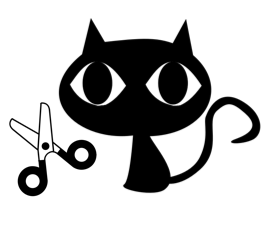

About
License
- Permissions
- :+1: Commercial use
- :+1: Modification
- :+1: Distribution
- :+1: Private use
- Limitations
- :x: Liability
- :x: Warranty
Logo
The logo of btmeister is as follows.

This image is refered from freesvg.org by OpenClipart.
Project Name cutcat
cutcat is Simple 'cat' to cut csv files from its features.